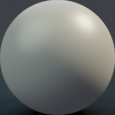

STL Viewer
So far we've dealt with 2D, but often we want things in 3D. The simplest 3D application I could think of is a STL viewer. So, how do we go from 2D to 3D? Well, we can no longer use a triangle strip to generate a quad, instead we have to use face indices to determine how the vertices are joined. We also have to include face normals because faces can now point in different directions.
The code for this is based this off the Binding Textures page.
Loading the STL
There are two formats for STL's: ascii and binary. For this we'll assume correctly formatted binary STL's. Because we're bundling them into the binary rather than letting the user select the STL, this will be robust enough. If this were to be a "generic" STL viewer we'd need to have more advanced error handling.
So, what is an STL file? The first 80 bytes are a header and are ignored. The next four bytes represent the number of faces. Then, for each face there is a face normal and three vertex positions (all as three f32's), and a u16 extra-data. We can extract all this information into it's raw parts using:
#![allow(unused)] fn main() { fn extact_buffers_from_stl(stl: &[u8]) -> (Vec<u16>, Vec<f32>, Vec<f32>) { let mut faces = std::vec::Vec::new(); let mut vertices = std::vec::Vec::new(); let mut normals = std::vec::Vec::new(); let num_faces = u32::from_le_bytes(stl[80..84].try_into().unwrap()); for face in 0..(num_faces) { const STRIDE: u32 = 4 * 12 + 2; const OFFSET: u32 = 84; let face_offset = OFFSET + STRIDE * face; let nx = get_f32(stl, face_offset + 4 * 0); let ny = get_f32(stl, face_offset + 4 * 1); let nz = get_f32(stl, face_offset + 4 * 2); normals.push(nx); normals.push(ny); normals.push(nz); normals.push(nx); normals.push(ny); normals.push(nz); normals.push(nx); normals.push(ny); normals.push(nz); vertices.push(get_f32(stl, face_offset + 4 * 3)); vertices.push(get_f32(stl, face_offset + 4 * 4)); vertices.push(get_f32(stl, face_offset + 4 * 5)); vertices.push(get_f32(stl, face_offset + 4 * 6)); vertices.push(get_f32(stl, face_offset + 4 * 7)); vertices.push(get_f32(stl, face_offset + 4 * 8)); vertices.push(get_f32(stl, face_offset + 4 * 9)); vertices.push(get_f32(stl, face_offset + 4 * 10)); vertices.push(get_f32(stl, face_offset + 4 * 11)); faces.push((face * 3) as u16); faces.push((face * 3 + 1) as u16); faces.push((face * 3 + 2) as u16); } (faces, vertices, normals) } }
Note that the normal is pushed into the normals array three times. This is once for each vertex.
Uploading the normals buffer to the GPU is the same as uploading the
positions buffer, but the face indices buffer is slightly different.
It's a bunch of u16's and openGL needs to know what it is. A slight
modification to the upload_f32_array function results in:
#![allow(unused)] fn main() { fn upload_indices_array( gl: &WebGl2RenderingContext, indices: Vec<u16>, ) -> Result<WebGlBuffer, QuadError> { let index_buffer = gl.create_buffer().ok_or(QuadError::BufferCreationFailed)?; gl.bind_buffer( WebGl2RenderingContext::ELEMENT_ARRAY_BUFFER, Some(&index_buffer), ); let memory_buffer = wasm_bindgen::memory() .dyn_into::<js_sys::WebAssembly::Memory>()? .buffer(); let indices_location = indices.as_ptr() as u32 / 2; let indices_array = js_sys::Uint16Array::new(&memory_buffer) .subarray(indices_location, indices_location + indices.len() as u32); gl.buffer_data_with_array_buffer_view( WebGl2RenderingContext::ELEMENT_ARRAY_BUFFER, &indices_array, WebGl2RenderingContext::STATIC_DRAW, ); Ok(index_buffer) } }
And when rendering, we need to activate all these buffers. Remember that
openGL is stateful, so you have to group all the operations on a single
buffer. You can't do all the bind_buffer calls then all the
enable_vertex_attrib_array calls, you have to deal with each buffer in
turn.
This results in the render function looking like:
#![allow(unused)] fn main() { pub fn render(&mut self, gl: &WebGl2RenderingContext) { gl.use_program(Some(&self.program)); gl.uniform1f(self.uniform_time.as_ref(), self.time); gl.uniform2f( self.uniform_resolution.as_ref(), self.resolution.0 as f32, self.resolution.1 as f32, ); bind_2d_texture_to_uniform( &gl, &self.uniform_image_matcap, &self.image_matcap, TextureUnit::Unit0, ); gl.enable_vertex_attrib_array(self.attrib_vertex_positions); gl.bind_buffer( WebGl2RenderingContext::ARRAY_BUFFER, Some(&self.position_buffer), ); gl.vertex_attrib_pointer_with_i32( self.attrib_vertex_positions, 3, // num components WebGl2RenderingContext::FLOAT, false, // normalize 0, // stride 0, // offset ); gl.enable_vertex_attrib_array(self.attrib_vertex_normals); gl.bind_buffer( WebGl2RenderingContext::ARRAY_BUFFER, Some(&self.normal_buffer), ); gl.vertex_attrib_pointer_with_i32( self.attrib_vertex_normals, 3, // num components WebGl2RenderingContext::FLOAT, false, // normalize 0, // stride 0, // offset ); gl.bind_buffer( WebGl2RenderingContext::ELEMENT_ARRAY_BUFFER, Some(&self.faces_buffer), ); gl.draw_elements_with_i32( WebGl2RenderingContext::TRIANGLES, self.num_face_indices as i32, WebGl2RenderingContext::UNSIGNED_SHORT, 0, ); } }
I based this off the binding_textures code, so now I did a bunch of
refactoring including things like:
- Renaming it from
quad.rstogeometry.rsandstl.rs - Moving shader loading and texture loading external to the geometry handling
Shaders
The shader for 2D simply wrote the vertex position straight to the screen position. If we simply write the x/y position of the vertices to the screen position we'll end up with a top view of our object. By multiplying our vertex positions by a transformation matrix we can rotate the object around:
#version 300 es
precision mediump float;
in vec4 vert_pos;
in vec4 vert_nor;
uniform vec2 iResolution;
uniform float iTime;
out vec4 screen_pos;
out vec4 screen_nor;
mat4 rot_y(float angle) {
float c = cos(angle);
float s = sin(angle);
return mat4(
vec4(c, 0.0, s, 0.0),
vec4(0.0, 1.0, 0.0, 0.0),
vec4(-s, 0.0, c, 0.0),
vec4(0.0, 0.0, 0.0, 1.0)
);
}
mat4 rot_x(float angle) {
float c = cos(angle);
float s = sin(angle);
return mat4(
vec4(1.0, 0.0, 0.0, 0.0),
vec4(0.0, c, s, 0.0),
vec4(0.0, -s, c, 0.0),
vec4(0.0, 0.0, 0.0, 1.0)
);
}
void main() {
mat4 pan = rot_y(iTime);
mat4 tilt = rot_x(sin(iTime));
mat4 mat = tilt * pan;
screen_pos = mat * vert_pos;
screen_nor = mat * vert_nor;
gl_Position = screen_pos;
gl_Position.x *= iResolution.y / iResolution.x;
gl_Position.w = 1.0;
}
A trick to providing "lighting" for simple scenes like this is to sample an image using the geometry normals. With an image like this:

It provides a "screen space lighting". As far as I know this is called a matcap, and is simple and cheap. So the fragment shader simply looks like:
#version 300 es
precision mediump float;
in vec4 screen_pos;
in vec4 screen_nor;
out vec4 FragColor;
uniform sampler2D image_matcap;
void main() {
vec2 matcap_coords = screen_nor.xy * 0.5 + vec2(0.5);
vec4 matcap = texture(image_matcap, matcap_coords);
FragColor = matcap;
}
The final result is:
You'll noticce there's some clipping on the monkey head ears. This is
because clip space runs from -1.0 to 1.0 on the z axis and we
aren't doing any manipulation in the vertex shader to compensate for
this.